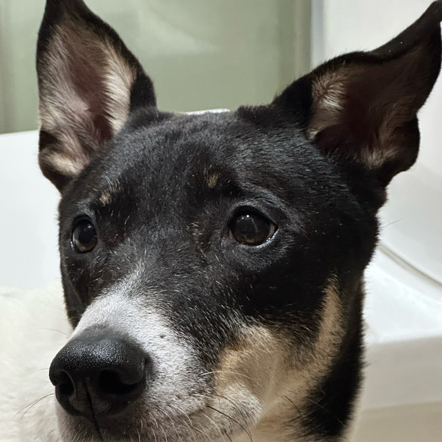
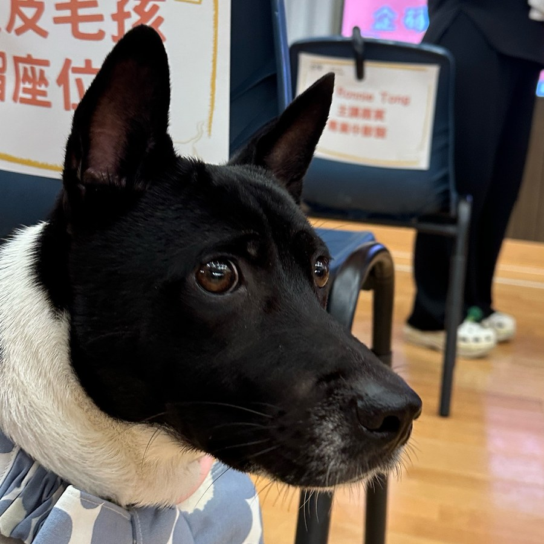

WEB / MAP
寵物友善指南
香港寵物友善場所的互動地圖與指南，按地區分類，手機優先。
個人檔案 · 2026 Personal Profile
在香港做車輛認證與法規合規。把條文翻譯成可執行、可覆核的流程； 用自動化接手重複工序，把時間留給真正需要判斷的地方。
現於香港一間工程公司擔任技術主管，負責車輛進口與認證線的技術內容。 日常工作是把歐洲廠方的技術文件、一致性證書與測試報告，對照本地法規要求， 整理成可遞交、可追溯的申請材料。
我的原則很簡單：每一格數據都要有書面出處。 沒出處的寧願留空，也不會用推測填補——因為認證文件出錯的代價， 遠高於多花幾小時核對。
類型評定、電池與安全報告、一致性文件、進口合規。
把散亂的人手工序重整為可重複、可驗證、有紀錄的流程。
自建文件抽取、影像分類與報告生成系統，支撐日常運作。
主管車輛類型評定申請的技術內容，由廠方規格書、電池報告到本地官方申報表格， 並統籌電動車批次的資料流程——相片歸檔、規格核對、報告生成與遞交前逐項覆核。
參與平行進口車輛的合規工作：海關評稅、車輛登記、交付文件， 以及與維修中心的技術對接。
營運寵物健康教育內容，以自家兩隻狗為角色製作短片與圖文； 另負責一條跨境選物品牌線，由選品、內容到上架。
自行設計與維護一套自動化系統，處理文件抽取、影像分類與排程工作， 支援上述幾條業務線的日常運作。
以下為可公開的項目。
香港寵物友善場所的互動地圖與指南，按地區分類，手機優先。
以自家狗狗為角色的寵物健康內容，短片為主，配合長文。
自營選物與代購，由韓國及內地採購，自家包裝出貨。
把官方表格與報告的填報工序自動化，減少人手抄錄。
首爾等地的景點與餐廳互動地圖指南。
文件處理、影像分類、排程與對外服務的整合系統。
兩隻狗佔了我生活很大一部分，也是內容創作的起點。

點心Dim Sum
牛奶妹Milky